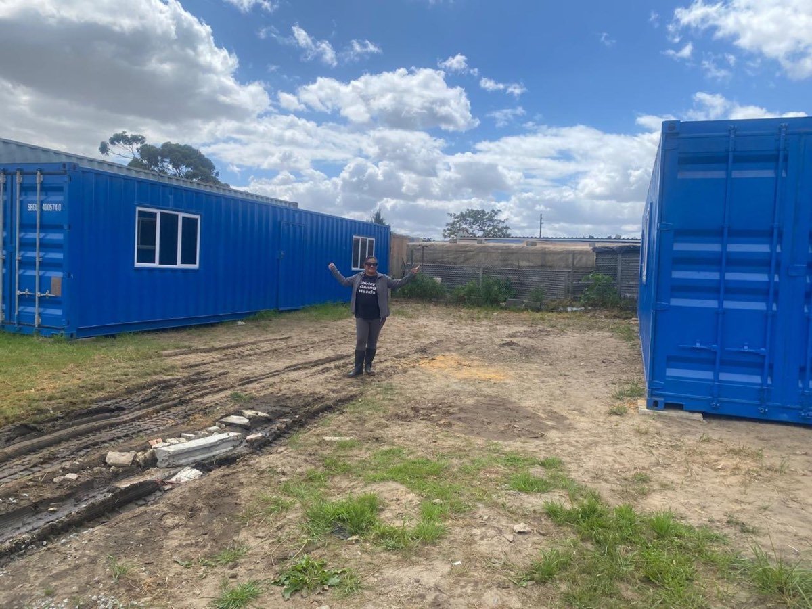

Kraaifontein Community Centre
In Kraaifontein, Cape Town, we support a local community with the practical means to develop and empower themselves — including containers used for community events, church, Bible study and soup kitchens. We also assist with a vegetable garden and contribute to basic needs such as housing, clothing and meals as needed.
Funding required: R200 000